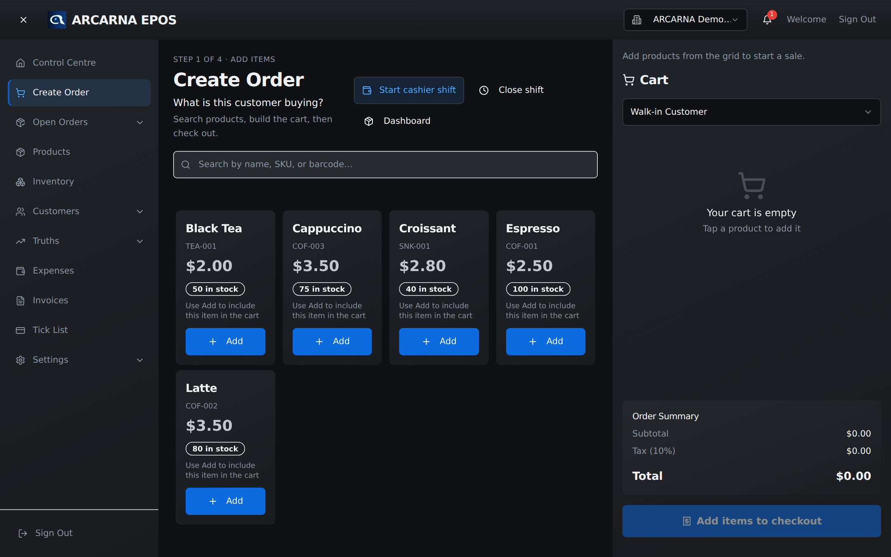

Staff training manual
Staff training manual
The till — how to build a basket, attach a customer, take payment and complete a sale, one calm step at a time.
What this screen is for
The till, in one screen
The Create Order screen is the till. It is where you ring up everything a customer is buying and take their money. It is built for cashiers and used all day: CASHIER MANAGER
arcarna walks you through a sale in four numbered steps, shown along the top of each panel: add items, review the cart, then choose payment and confirm. You never have to remember the order — the screen tells you where you are.

The four parts of the screen
| Part | What it does |
|---|---|
| Product grid | Every product you can sell, shown as tiles. Each tile has the name, its code, the price, a stock badge (e.g. 12 in stock, Low or Out of Stock) and an Add button. |
| Search | The box above the grid. Type to filter by name, SKU (product code) or barcode. The placeholder reads Search by name, SKU, or barcode… |
| Cart | The panel on the right (on a phone, tap the round cart button, bottom right). It lists what you've added, with quantity and price you can adjust, and holds the customer and any discount. |
| Order summary | The box near the bottom of the cart. It adds everything up live: subtotal, any discounts, tax and the total the customer pays. |
Step 1 · Add items
Building a basket
A basket is just the list of items in the cart. Build it by adding products, then adjusting quantities and prices if you need to.
- Find the product in the grid. Type in the Search box to narrow it down if there are many tiles.
- Select the tile, or its Add button. The item drops into the cart and a short Added to cart message confirms it.
- Add the same product again to increase its quantity, or use the – and + buttons on the cart line. You can also type a number straight into the quantity box.
- To change what a line costs on this sale, type over the figure in the Price box on that line. The line's default price is shown just underneath as a reminder.
- To take an item off, use the bin icon on its cart line. Setting a quantity to zero removes it too.
Step 1 · Who is buying
Attaching a customer
Every sale is either to a walk-in or to a named customer. A walk-in is the default and needs no details. Attach a named customer when they are a regular, when they want an email receipt, or when they collect loyalty points.
- At the top of the cart, open the Walk-in Customer picker.
- Leave it on Walk-in Customer for an anonymous sale — nothing else to do.
- For a named customer, type their name, phone or email into the search box inside the picker, then choose them from the list.
- Once attached, their name shows on the cart. If they belong to a loyalty tier, a small membership card appears with their points and any tier discount.
Step 2 · Review the cart
Applying a discount
Discounts only apply once a customer is attached — a walk-in sale is rung at full price. Three kinds may be available, and each shows as its own line in the order summary.
| Discount | How it works |
|---|---|
| Promo code | With a customer attached, a Enter promo code… box appears. Type the code and select the tag button to apply it. A valid code confirms and takes money off; an invalid or expired one is refused. |
| Loyalty tier | If the customer's tier carries a discount, arcarna applies it on its own — you don't do anything. It shows as a Loyalty line in the summary. |
| Points redeemed | On the membership card, Redeem points lets a customer spend loyalty points for money off, once they have enough. See the brief note at the end of this section. |

Reading the order summary
| Line | What it means |
|---|---|
| Subtotal | The items added up, before any discount or tax. |
| Loyalty / Promo / Points | Any money off. These lines only appear when a discount applies. |
| Tax | Tax on the discounted subtotal. |
| Total | In bold — the amount the customer pays. |
| Earn … points | For a named customer, how many loyalty points this sale will add to their balance. |
Steps 3 & 4 · Payment and confirm
Taking payment and completing the sale
When the basket is right, take the customer's money and finish the sale.
- Select Checkout → Choose payment at the bottom of the cart. The Payment & confirm box opens. (An empty cart cannot be checked out.)
- Choose the Payment Method — see the table below.
- Check the order summary at the foot of the box: customer, number of items and the total.
- Select Confirm payment. arcarna records the sale, the cart clears, and you're ready for the next customer.

The payment methods
| Method | Use it when |
|---|---|
| Cash | The customer pays with notes and coins. |
| Card | Payment taken on a card machine. |
| Transfer | The customer pays by bank transfer. |
| On Credit (Tick) | The customer buys on account and settles later. Their balance appears on the Tick List. |
| Gift card | Paid with a gift card. Look up the card and enter the amount to apply; if it doesn't cover the whole total, choose how the rest is paid. |
After the sale
What arcarna records, and what if you're offline
Confirming a sale saves an order against your open shift: the items and quantities, the price of each line, the discount and total, the payment method, the customer (or Walk-in), and any loyalty points earned or redeemed. Stock for each item drops automatically. The saved order can be found and, if needed, amended or refunded under Open Orders (Section 4).
In brief
Gift cards, tick and loyalty points
These three come up occasionally at the till and are covered in full elsewhere:
| Feature | At the till |
|---|---|
| Gift card | A payment method. Look up the card, apply its balance, and pay any remainder another way. |
| Tick (on credit) | A payment method for account customers. What they owe shows on the Tick List. |
| Loyalty points | Named customers earn points on every sale and can redeem them for money off with Redeem points, once they reach the minimum. |